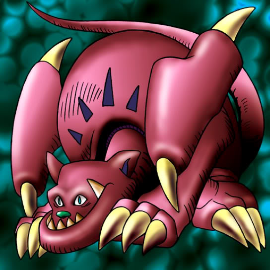

Griffore

STATS
ATK: 1200
DEF: 1500DECK COST
Deck Cost per Card: 27Fusion List (10 Possible Fusions)
- Griffore + Dark Plant = Flower Wolf
- Griffore + Dissolverock = Flame Cerebrus
- Griffore + Firegrass = Flame Cerebrus
- Griffore + Goddess with the Third Eye = Nekogal #2
- Griffore + Holograph = Dice Armadillo
- Griffore + Ice Water = Nekogal #2
- Griffore + Mystical Elf = Nekogal #2
- Griffore + Nemuriko = Nekogal #2
- Griffore + Succubus Knight = Nekogal #2
- Griffore + Wings of Wicked Flame = Flame Cerebrus